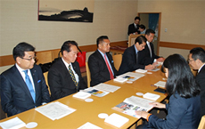
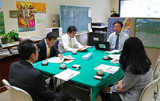
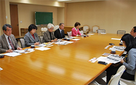

埼玉県議会各会派の皆様と懇談をしました
埼玉県生協連は、さいたまの生協の活動や取り組みとくらしの願いを伝える機会として、埼玉県議会の各会派の皆様との懇談会を行っています。12月に、3会派の皆様との懇談をしました。（開催順に掲載しています。他の会派の皆様との懇談会は3月に予定しています）
懇談では、はじめに岩岡県生協連会長理事より｢賀詞交換会、介護保険制度改定と新地域支援事業、県内消費者団体 交流会、第30回埼玉県原爆死没者慰霊式、2015コヨットin埼玉、九都県市合同防災訓練、第51回埼玉県消費者大会、彩の国食と農林業ドリームフェスタ等」の2015年度活動の取り組みと｢会員生協の事業状況や組合員数等について｣｢埼玉県内の市町村における消費生活関連事業調査結果報告の概要ついて｣紹介し、その後、意見交換しました。
自由民主党県議団役員の皆様との懇談会
- 【日 時】
- 12月7日(月)17:00～18:35
- 【場 所】
- 浦和ロイヤルパインズホテル5階｢四季彩｣
- 【出席者】
- 自民党県議団(小谷野五雄団長、宮崎栄治郎副団長、諸井真英副団長
小島信昭幹事長、小林哲也政調会長）
- 埼玉県生協連(岩岡宏保会長理事、滝澤玲子常務理事、加藤、今野)
- 【懇 談】
- (抜粋)

- 深谷市ではこの10年で1万人の人口減少となっています。商店街がシャッター通りとなり、買い物難民のフォローが必要とされます。熊谷の医療生協には、小児医療や高齢者分野で活躍いただき感謝しています。
- 昨年は蕨の検査センターや南浦和店の視察に参加しました。近くにお店があるが、生協の宅配を利用して大変助かっています。
- 民生委員のなり手が少なくなっている一方で高齢者の消費者被害が増えています。
生協のネットワークをいかして被害に遭わないようにしてほしい。
＊他、生協の配達や商品、農業分野や鉄道インフラ、先端技術、県民生活関連への取り組み等多岐にわたる内容について懇談しました。
無所属改革の会の皆様との懇談会
- 【日 時】
- 12月14日(月)13:30～14:25
- 【場 所】
- 埼玉県県議会無所属改革の会控室
- 【出席者】
- 無所属改革の会県議：中川浩代表、木下博信県議、松坂喜浩県議
- 埼玉県生協連：岩岡会長理事、滝澤常務理事、今野(事務局)
- 【懇 談】
- (抜粋)

- ｢提言｣には消費者教育推進計画を掲げましたが、消費者被害に遭われる方は、孤立していたり、被害に遭いやすい傾向にあり、具体的な防止策について埼玉県生協連としてどのように考えていますか。
- 団地にあったスーパーが撤退し、遠くのスーパーに買いものにも行けない方がいる中で、生協の宅配で助かっています。
- 里親の活動を行っていますが、その活動を懇談会等に紹介することは可能か。フードバンクや子供のご飯提供、無償塾などありますが、総合的な貧困対策が必要です。
＊その他、生協のカタログや労働環境、今後の連携等多岐にわたる内容について懇談しました。
日本共産党埼玉県議団の皆様との懇談会
- 【日 時】
- 12月18日(金)14:00～14:50
- 【場 所】
- 埼玉県県議会議員団控室
- 【出席者】
- 日本共産党県議：秋山文和県議、村岡正嗣県議、金子正江県議、前原かづえ県議、日本共産党埼玉県委員会：伊藤岳県民運動委員長、おくだ智子候補
- 埼玉県生協連：岩岡会長理事、滝澤常務理事、今野(事務局)
- 【懇 談】
- (抜粋)

- 先日中小企業連合会と懇談を行い｢軽減税率｣について中小事業者には軽減されず死活問題との指摘がありました。店舗でのレジ改変など大変だと思いますが、埼玉県生協連ではどのような論議になっているのか教えてほしい。
- かつてTPPに対する大規模な集会に消団連として参加されたが、2016年以降のどのようにすすめように考えていますか。必要なイニシアティブを発揮してほしい。